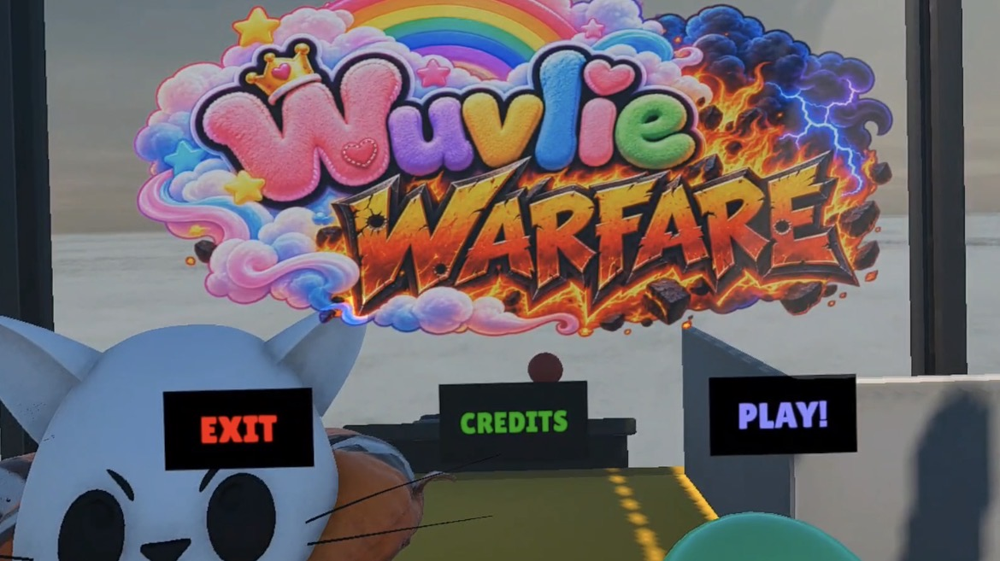
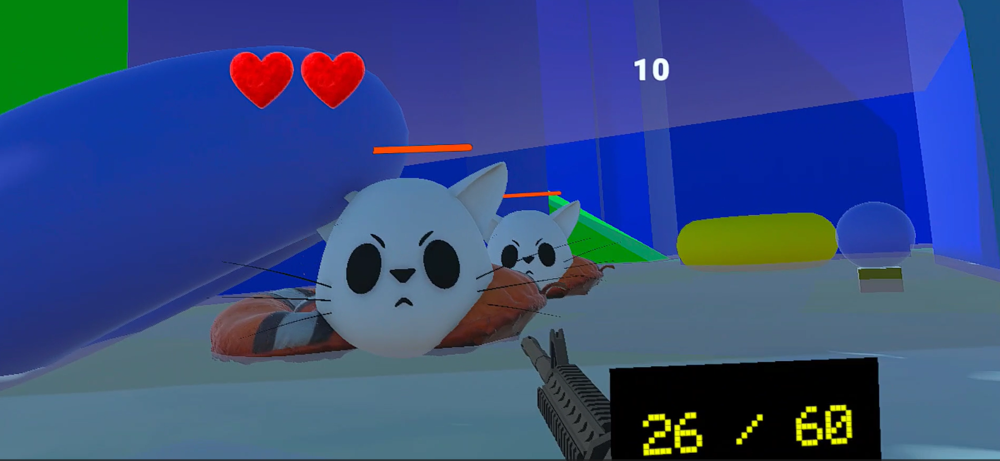
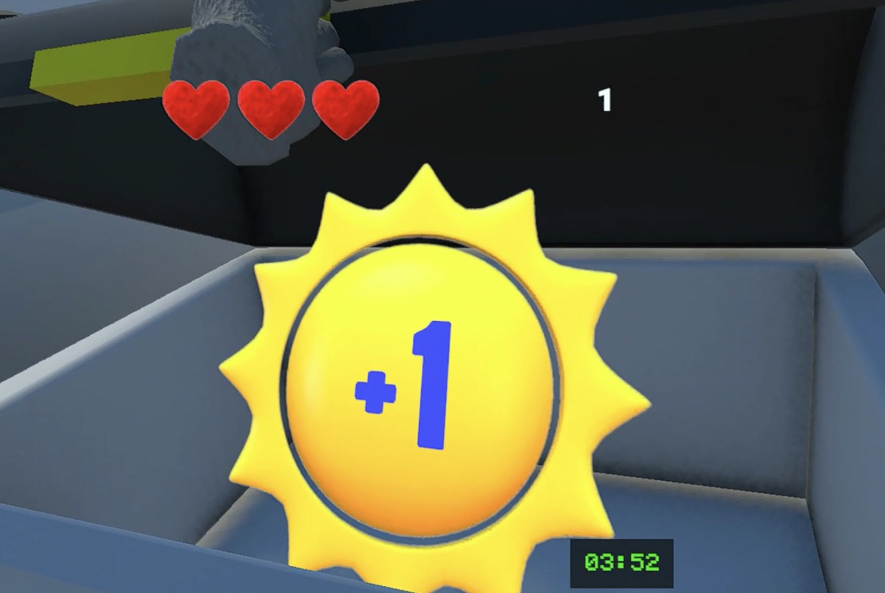
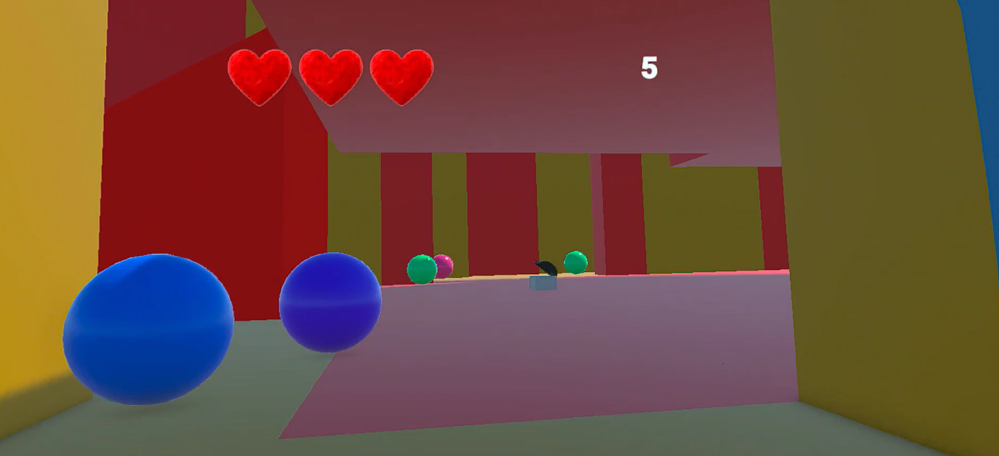
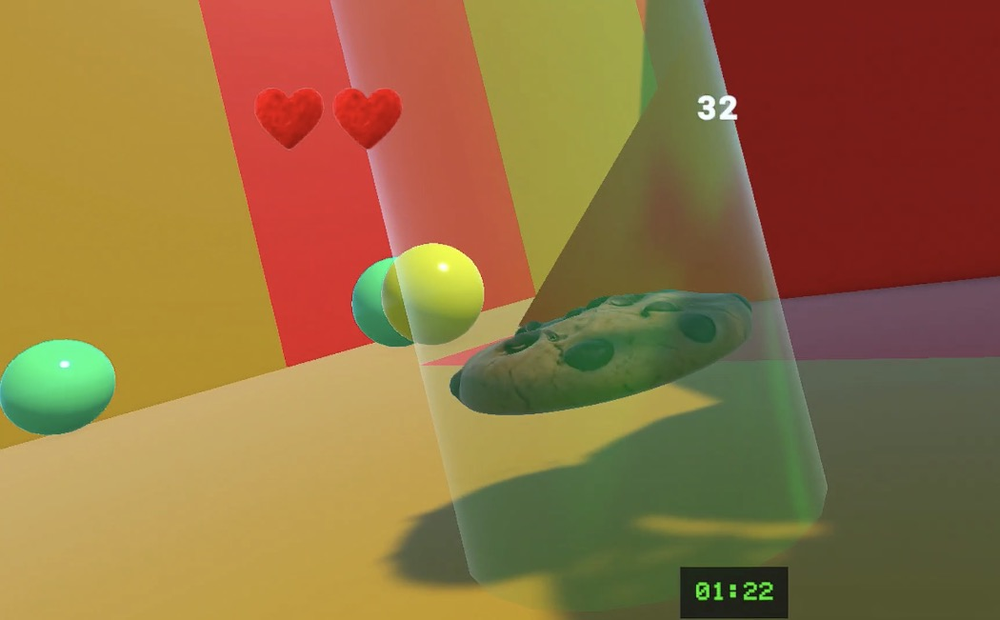
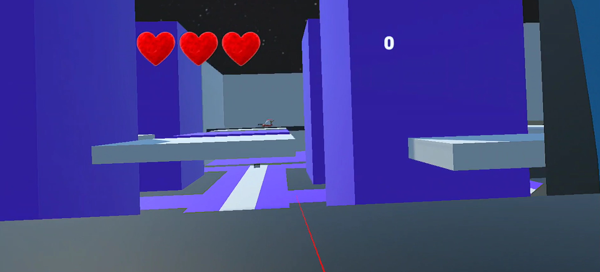

Unity • VR Arcade Shooter
Wuvlie Warfare
A thrilling fast-paced VR arcade shooter where opening chests, collecting sweet treats, shooting plushies, and achieving the highest score has never been more fun! With three 3D maps to immerse in, Pinchypup, Hoppo, Shellshark, and Rattlemeowser, the four members of the Wuvlie family, are excited for a playdate with you!

About the Project
Wuvlie Warfare is an VR arcade shooter game that features four evil monster plushies created by myself, known as "The Wuvlies"! The goal of the game is to obtain as high of a score as possible in the limit of 5 minutes provided for each round. Points can be scored by collecting all five different sweet treats that randomly spawn throughout the match, opening the mystery chest that has bonus points, or the main way, defeating the Wuvlies patroling the map! The game contains three maps created by myself in Blender that follow a common theme of fun environments my inner child would enjoy exploring. Get ready for playtime with the Wuvlie family!
Team: Dylan Abry (Lead Designer and Developer)
Gameplay & Media
Wuvlie Warfare Trailer
A trailer that I made for the game Wuvlie Warfare prior to its release on itch.io!

Here Comes Rattlemeowser!
Each plushy contains a detection radius and a chase radius. If the player crosses a plushy's detection radius, then the plushy will use the NavMesh to reach the player's location through the closest possible path. If the player manages to exit a plushy's chase radius (which is way larger than the detection one!), the plushy will lose interest and stop chasing after the player.

Chest Bonus Points
Each game, one chest contains a special bonus points gift that rewards the player 1 to 5 extra points to their game score!

Hueball Circus Ball Fun
Hueball Circus, the game's first map, features balls of different colors that the player and plushies can knock around for fun.

Sweet Treat Bonus
In each game, bonus treats will randomly appear for the player to collect. If all five are collected -- the cookie, ice cream, chocolate bar, donut, and lollipop -- the player is awarded 15 extra points to their score!

Low-G Park Map
As the name of the map implies, the gravitational force of Low-G Park is reduced to about 0.1x of normal gravity, allowing the player to jump through the air and bounce to unbelievable heights on the map's trampolines, as if they were actually in space!
What I Built
- Standalone VR Arcade Shooter: Developed a complete virtual reality game in Unity 6 using C#, XR Interaction Toolkit and OpenXR, designed for standalone Meta Quest 3 gameplay.
- Intelligent Enemy AI: Created four unique plushie enemy types with autonomous patrol, player detection, pursuit, and attack behaviors using Unity Behavior Graph and NavMesh pathfinding. Each enemy contains its own movement behavior, detection and follow radii, movement boundaries, and spawn logic.
- Three Themed 3D Environments in Blender: Created an interactive circus, waterpark, and space arena in Blender for the game's environments. Each area contains its own distinct layout, environmental mechanics (ex: water physics in Clementine Pool or trampolines in Low-G Park) and navigation constraints.
- Dynamic Gameplay Systems: Implemented randomized enemy and item spawning, weapon and chest interactions, projectile-based combat, health and damage systems, collectible rewards, and achievement tracking. Also provided a timed charging system for the game using XR socket interactables so players could reload their weapons once they ran out of ammo.
- Custom Audio, Voicing and UI: Composed original soundtracks for each environment using Soundtrap and Audacity, integrated contextual sound effects, and developed interactive menus, HUD elements, and achievement displays. In addition, I acted as the voice for all four Wuvlie plushies!
Technical Challenges
- Standalone Meta Quest Deployment: Resolved Android/OpenXR compatibility issues and mobile render pipeline discrepancies, ensuring custom water shaders, particle systems, and gameplay systems functioned correctly on the headset.
- VR Performance Optimization: Optimized enemy navigation and rendering configurations, using practices such as material pooling, to improve frame rates and maintain smoother gameplay on VR hardware. Optimized environment geometry, including usage of ramps instead of stairs for a smoother frame rate.
- Mastering Unity's XR Interaction Toolkit: Having never built a game in VR prior to this project, I was able to obtain hands-on experience with multiple important VR practices, including Tracked Pose Drivers, Locomotion (Move, Gravity, and Jump Providers), Grab Interactables, Socket Interactables, Hinge Joints and Ray Interactions.
- XR Physics and Interactions: Debugged collision conflicts between the VR player and interactable weapons, refined grabbing mechanics, and implemented reliable projectile collision and damage detection with enemy plushies. Ensured robustness of gravity and jump systems to handle spam input or game object interference. Developed a weapon interaction system that allows weapons to snap to the player's hand when interacted with using the Ray Interactor.
- AI Navigation and Behavior: Engineered responsive enemy AI using priority-based AI blackboards and behavior trees, conditional transitions, and NavMesh pathfinding. Resolved patrol interruptions, unreachable destinations, and navigation restrictions across complex environments.
- Procedural Enemy Spawning: Developed randomized spawning within designated map zones for each plushy type, addressing invalid NavMesh positions, patrol initialization, and enemy placement constraints.